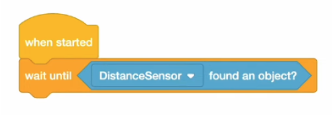
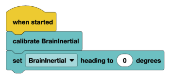

Lesson 6: Sensors
Lesson Objectives
- The purpose of this lesson is to explain how the different types of sensors utilized in VEXIQ work.
- Distance Sensor
- Color Sensor
- Gyro Sensor
Materials Needed
- Computers (1 per group)
- Basebots w/ Sensors (distance, color, or gyro)
- VEXcode IQ website
- Notebooks for each student
Lesson Procedure
Overview
- This lesson is to explain how sensors work and why they are necessary in the world of robotics.
- Reinforce how sensors make the robot’s movements a lot more accurate and precise.
- Explain why it is useful to be able to utilize Color and Distance Sensors.
Getting Started
- Begin with a quick class discussion using the questions below to enforce the reasoning behind using sensors:
- What are some sensors you use every day?
- How do sensors help devices “know” what’s happening around them?
- Explain input & output and why that is useful/applies to robotics.
- Introduce the three sensors:
- Sensors Slideshow
I added transitions for the questions/images
The slideshow is imagery/writing, but most of the explanation needs to be said aloud (the second slide has some notes at the bottom)
- Sensors Slideshow
- The Distance Sensor, which measures how far objects are
- Uses ultrasonic sound waves to measure how far away an object is. It reports distance in millimeters
- The Color Sensor, which detects colors and light intensity
- Detects the color of objects- is able to detect basic colors
- The Gyro Sensor, which measures turning and orientation
- Measures the robot's rotation in degrees- essential for accurate turning.
- Also make sure to go over this document on how to use a gyro sensor.
- Next, using their computers, have the kids open the VEXIQ website.
- Show the students where the sensor commands are located in the toolbar and how to use them.


Monitoring Progress
- Task 1: Gyro
- Purpose: turn with precision
- Reset gyro before beginning activity
- Program the robot to:
- Drive forward 300 mm
- Turn exactly 90 degrees using the gyro
- Repeat 4 times to create a perfect square
- Task 2: Distance Sensor
- Using knowledge from previous lessons, program the robot to drive forward until the distance sensor detects an object (can be anything) within 100mm, then stop.
- Challenge: Once stopped, use knowledge from Task 1 to have the robot execute a 180 degree turn.
- Task 3: Color Sensor
- Place a red object or a blue object in front of the robot.
- Program the robot to drive forward (~200 mm)
- If it detects red, turn 90 degrees to the left
- If it detects blue, turn 90 degrees to the right.
Wrapping Up
- Have a group discussion:
- Which sensor was most helpful/interesting?
- If you could add a new sensor to the robot, what would it do?
Assessment
- Students must be able to explain the purpose & function of all three sensors
- They should be able to identify where to find the commands in the code.
Preparation for next class
The next class will introduce a new concept called conditional statements.